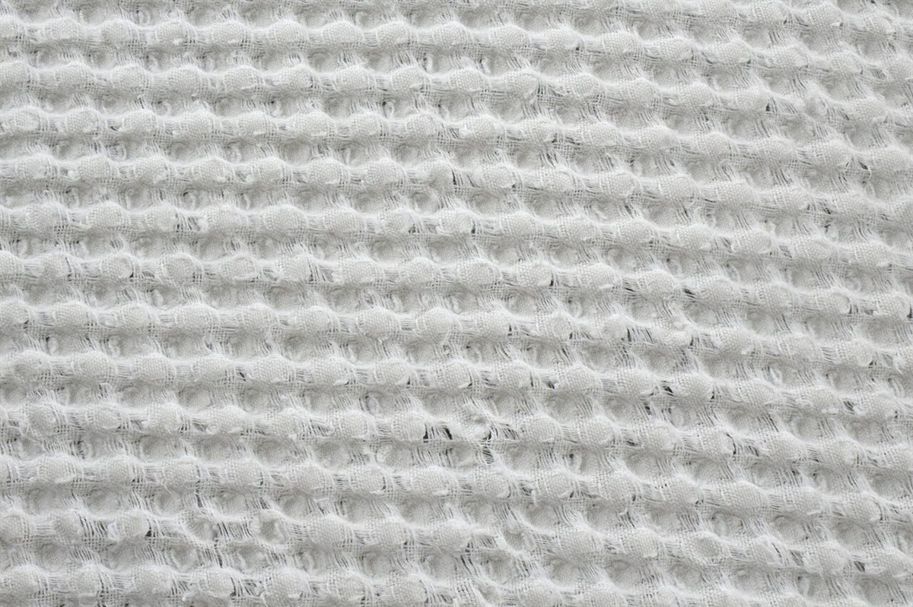

ベーカリー / 石川県加賀市
米粉シフォン心寧
石川県加賀市小菅波町にあるお店「米粉シフォン 心寧」のご案内ページです。営業時間やメニューなどの詳しいことは準備中。まずはInstagramをのぞいてみてください。

制作側の連想
泡立てた卵白の「角(つの)」三段階
屋号に「シフォン」の語があることから、制作側は、ふわりと泡立てる作業でできる「角」を連想しました。お店の理念・由来とは無関係の、制作側の連想です。お店で何をどう作っているかは確認できていないため、ここでは見立てとして使っているだけです。
- 一
ゆるい角
持ち上げると、すぐにおじぎする。まだ頼りない、はじまりの角。
- 二
やわらかい角
先端がくにゃりと曲がる。ふっくらした途中の姿。
- 三
ぴんと立つ角
まっすぐ天を向く。ここでは、立ち姿を楽しむ見立てにしています。
ふわりの断片(イメージ)
白くて軽いものを集めました
写真はお店や加賀市のものではありません。「ふわり」「泡」「白」の連想で選んだ、国外・撮影地不明のフリー素材です。



ご案内
お店のこと(確認できたものだけ)
| 所在地 | 〒922-0424 石川県加賀市小菅波町1丁目130 |
|---|---|
| 電話 | なし |
| 営業時間 | 準備中 |
| 定休日 | 準備中 |
| ご予約 | 準備中 |
| 駐車場 | 準備中 |
| SNS | Instagram @kokone_chiffon |